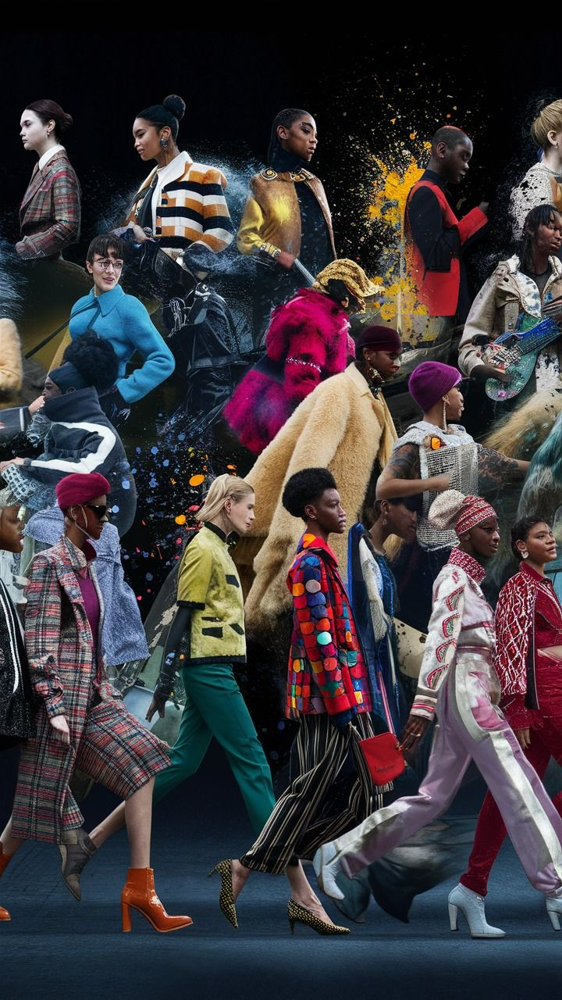
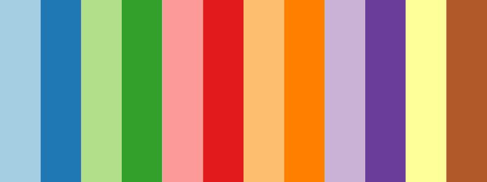

¿Qué son las tendencias de moda?
Las tendencias de moda son estilos, prendas, colores, estampados y accesorios que adquieren popularidad durante un periodo determinado. Estas reflejan los gustos, intereses y cambios de la sociedad, y están influenciadas por diseñadores, celebridades, redes sociales, música y cultura.
Las tendencias cambian constantemente y permiten experimentar con nuevas formas de vestir y expresar nuestra personalidad.
Tendencias principales
Las principales tendencias de moda reúnen diferentes estilos y formas de vestir que marcan cada época.
Oversize
Prendas amplias y holgadas que ofrecen comodidad y un estilo relajado
Minimalismo
Diseños sencillos, colores neutros y combinaciones elegantes.
Vintage
Inspiración en la ropa y los estilos de décadas pasadas.
Streetwear
Moda urbana influenciada por la música, el skate y la cultura juvenil.

Tendencias de moda
Las tendencias de moda funcionan como cambios en los estilos, prendas, colores y accesorios que comienzan a llamar la atención de las personas y se vuelven populares durante un tiempo determinado.
Las tendencias nacen de la creatividad y la influencia cultural, se difunden entre las personas y evolucionan según los gustos y cambios de la sociedad. No son reglas obligatorias; cada persona puede adaptarlas a su propio estilo.

Colores de temporada
Los colores que destacan en cada época del año y cómo combinarlos para crear diferentes estilos.
Prendas imprescindibles
Las prendas básicas que se vuelven populares y que puedes combinar de distintas maneras para crear outfits.
¿como puedes saber las nuevas tendencias?
Para conocer las nuevas tendencias de moda, es importante observar lo que sucede en el mundo de la moda y cómo cambian los gustos de las personas. Puedes descubrirlas a través de diferentes medios como redes sociales, pasarelas de moda, revistas de moda, influencers y marcas de ropa.
No todas las tendencias tienen que formar parte de tu estilo. Puedes elegir las que te gusten y adaptarlas a tu personalidad.
Redes sociales
Instagram, TikTok y Pinterest muestran nuevos estilos y combinaciones.
Pasarela de moda
Los desfiles de diseñadores presentan propuestas para próximas temporadas.
Revistas de moda
Publicaciones como Vogue muestran novedades, colecciones y estilos.
Un espacio para sentir la moda
Las tendencias de moda son una parte importante del mundo de la vestimenta, ya que reflejan los gustos, la creatividad y los cambios de la sociedad. Conocerlas nos permite descubrir nuevos estilos, experimentar con diferentes prendas y encontrar inspiración para crear nuestros propios outfits. Sin embargo, la moda no se trata solamente de seguir lo que está de moda, sino de adaptar cada tendencia a nuestra personalidad y utilizarla como una forma de expresión.